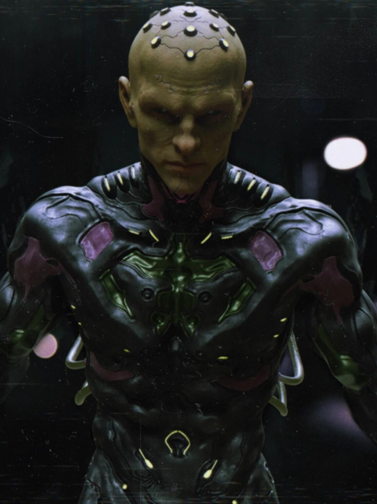

BRANIAC
 Brainiac é um supervilão fictício que pertence ao universo dos quadrinhos da DC Comics, aparecendo mais frequentemente como oponente do Superman, seu segundo arqui-inimigo mais letal depois de Lex Luthor, e um inimigo frequente da Liga da Justiça. Brainiac é tipicamente descrito como um ciborgue ou androide extraterrestre. Ele é um dos principais inimigos do Superman, e é responsável por encolher e roubar a Kandor, a capital do planeta natal de Superman, Krypton. Em algumas continuidades, ele também é responsável pela destruição de Krypton. Devido a várias revisões da continuidade da DC, variações do Brainiac apareceram. A maioria das encarnações de Brainiac descreve-o como um ser de pele verde em forma humanoide. Ele é careca, com um conjunto de objetos parecidos com eletrodos (às vezes brilhando) que se projetam de seu crânio. Toda vez que Brainiac é morto, sua consciência ainda funciona, o que significa que ele só é morto fisicamente e a única maneira para que Brainiac seja morto conscientemente é destruir o banco de memória dele. Seu nome é uma junção das palavras em inglês "cérebro" (brain) e "maníaco" (maniac). É considerado pela IGN o 17º dos 100 maiores vilões.